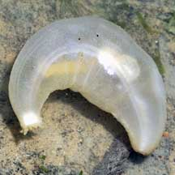
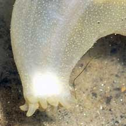
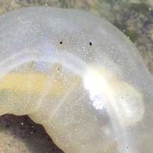
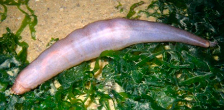
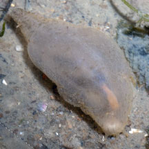

|
|
| sea cucumbers text index | photo index |
| Phylum Echinodermata > Class Holothuroidea |
| See-through
sea cucumber Paracaudina australis* Family Caudinidae updated Apr 2020 Where seen? This slippery transparent sea cucumber is sometimes seen floating in water or among seagrasses on some of our Northern shores. Sometimes also seen buried in sand near seagrasses. When seen, many individuals are encountered, and then none for a long time. Features: 10-15cm long. Body cylindrical and sausage-like. It does not have tube feet and thus feels smooth and slippery. The skin is thin and translucent so it's possible to see the double stripes of muscles along the length of the body and even its internal organs. It has short stubby feeding tentacles. What does it eat? It burrows and feeds in soft ground. It breathes through its anus so it sticks its backside out to the surface. |
|
 Chek Jawa, Sep 03 |
 Short stubby feeding tentacles. |
 Internal organs sometimes can be seen. |
*Species are difficult to positively identify without close examination.
On this website, they are grouped by external features for convenience of display
| See-through sea cucumbers on Singapore shores |
On wildsingapore
flickr
|
| Other sightings on Singapore shores |
 Pasir Ris Park, Jan 09 |
 Changi Point, Nov 25 Shared by Marcus Ng on facebook. |
|
Links
References
|